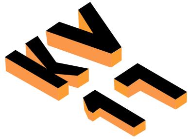

OM #VALGPÅSKINNER
Viste du at der snart er kommunalvalg? #VALGPÅSKINNER er en kampange, lavet i samarbejde med TV2 LORRY og de øvrige regioner, samt DSB og de politiske ungdomspartier. Kampangen går ud på at promovere det kommende kommunalvalg på en ung og festlig måde. Derfor inviterer vi dig til valgfest for at fejre demokratiet. Tilmeldingen er ganske gratis og vi sørger for dintransport til og fra festen.